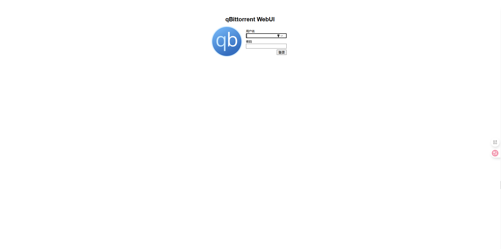
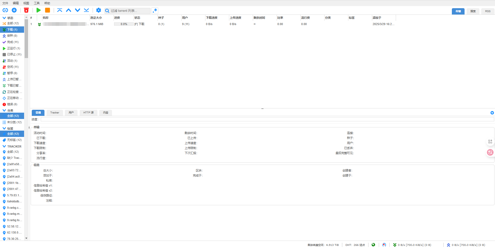
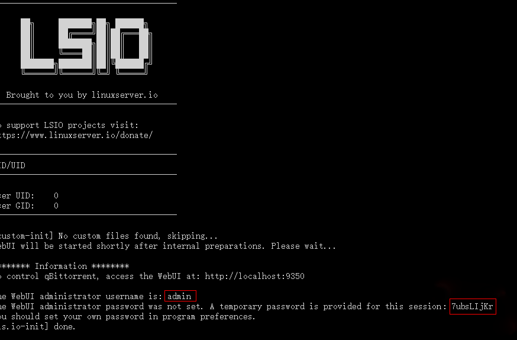
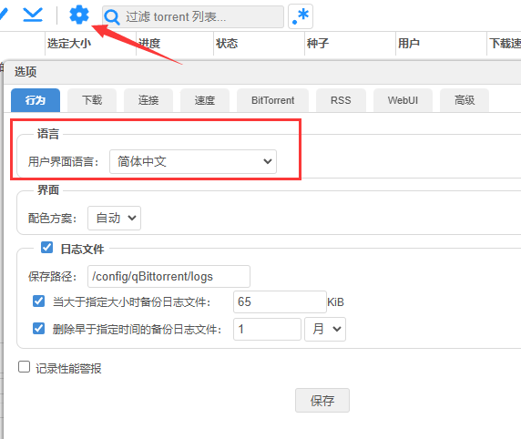
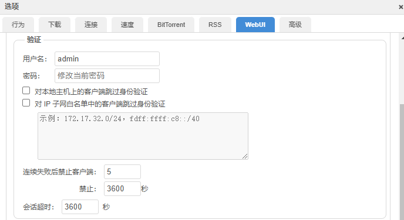
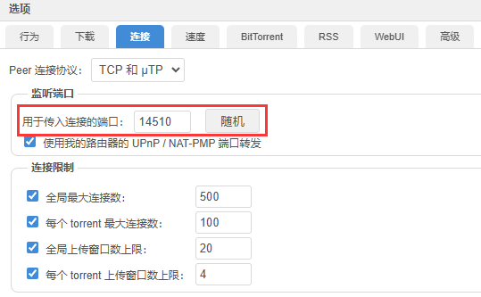
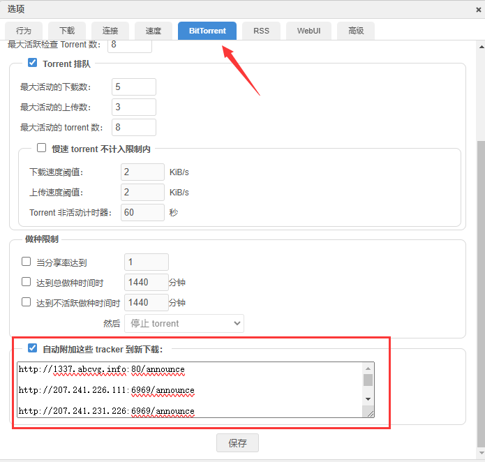
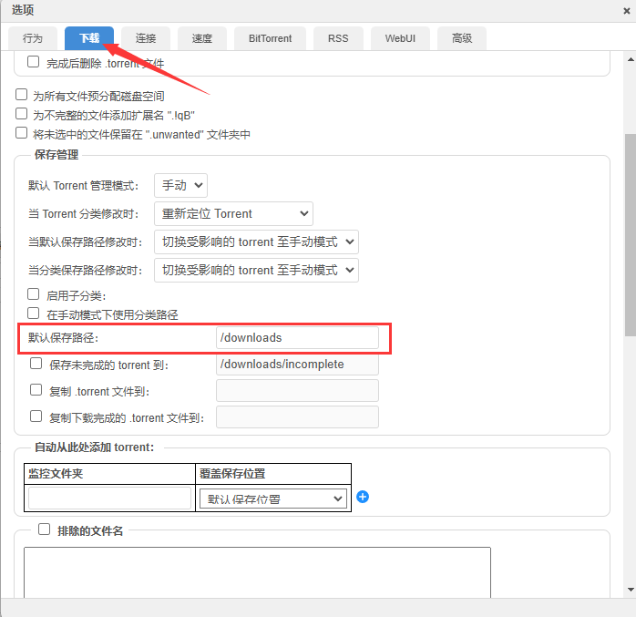
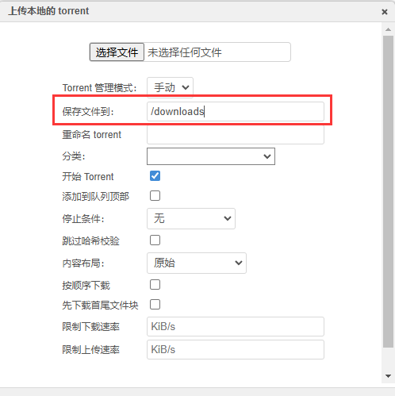

Version：qBittorrent v5.0.4

# 介绍
qBittorrent 是一款免费的开源种子下载工具，作为 µTorrent 的替代品。它在所有平台上都提供相同的功能，包括 Windows、Linux 和 macOS。该应用程序还配备了一个可扩展的搜索引擎以及 Web UI 远端，以最大化你的 torrent 体验。使用 qBittorrent，你可以在多个平台上轻松下载你喜爱的内容。
官网：https://www.qbittorrent.org/
项目：https://github.com/linuxserver/docker-qbittorrent

# 安装
创建 qbittorrent 数据文件存放位置：
# $PATH 为你的下载存放路径 | ||
mkdir -p /app/qbittorrent/config /<$PATH> | ||
cd /app/qbittorrent |
添加 docker-compose.yml 配置文件：
vim docker-compose.yml |
写入：
services: | |
qbittorrent: | |
image: linuxserver/qbittorrent:latest | |
container_name: qbittorrent | |
environment: | |
- PUID=0 | |
- PGID=0 | |
- TZ=Asia/Shanghai | |
- WEBUI_PORT=9350 # Web UI 访问端口 | |
- TORRENTING_PORT=18960 # 容器的监听端口 | |
volumes: | |
- /app/qbittorrent/config:/config | |
- /<$PATH>/downloads:/downloads #optional | |
ports: | |
- 9350:9350 # 映射须一致 | |
- 18960:18960 # TCP 监听端口 | |
- 18960:18960/udp # UDP 监听端口 | |
restart: always |
note：
TORRENTING_PORT 最好避免填写 6881 端口，运营商一般屏蔽该端口，选 10000 后的比较好；当改动该项的时候，底下的 TCP 监听端口 和 UDP 监听端口 也要一同改变；如果想通过在 Web UI 上变换端口，则只是当前保存生效，重启容器后会自动变回 TORRENTING_PORT 的配置端口。
# 使用
访问 http://localhost:9350 ，初次登录，默认用户名（admin）和密码，通过启动日志获取；可在主机通过终端命令 docker logs qbittorrent 获取：

# 语言切换
在 设置 -> 行为 中找到语言，进行你需要的配置，然后点击保存：

# 密码修改
由于初始化的账号密码随机性，可以在 设置 -> WebUI 中的验证更改：

# 更改监听端口
如出现默认端口被一般 PT 站点禁用，显示 ‘Port 6881 is blacklisted’ 报错，或者种子下载没速度（非网络问题），则尝试在 qbittorrent 变更监听端口：

# tracker 服务器
部分冷门资源会导致下载缓慢，这时可以添加 BT 下载所需的 tracker 服务器列表：

# 下载路径
不管是默认下载路径亦或是手动指定下载路径：


都需要根据 Docker 配置里的 volumes 字段中设置的下载文件夹映射路径配置，可以是底下的子文件夹，但不能更换为其范围以外的路径，eg：可以是 /downloads/movie 或 /downloads/video 等子路径，不能是 /movie 或 /video 这些非配置上的路径。